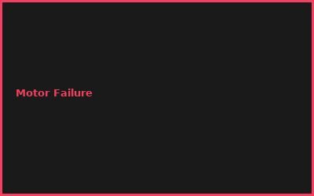
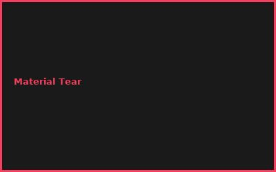
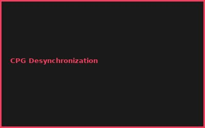
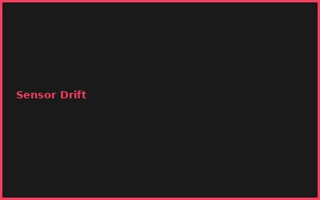

Kapitel 1: Bio-Inspired Locomotion
- Fish Swimming (Undulation Patterns)
- Bird Flight (Wing Flapping)
- Insect Movement (Hexapod Gait)
- Hydrodynamics & Aerodynamics
Kapitel 2: Soft Actuators
# Soft Robotics Actuators
# Silicone-based soft materials
# Tendon-driven mechanisms
actuator_material = "Dragon Skin 10"
force_range = 1-50N
response_time = 100-500ms
Kapitel 3: Vision & Sensing
- Lateral Line Sensors (Water Pressure)
- Compound Eyes (Multi-directional)
- Proprioceptive Feedback
- Bio-Inspired Imaging
Kapitel 4: Neural Control
- Central Pattern Generators (CPG)
- Reflex Arcs & Feedback
- Oscillatory Networks
- Distributed Control
Kapitel 5: Materials & Manufacturing
- Silicone Casting
- 3D Printing Soft Materials
- Bio-Compatible Polymers
- Scalability
Kapitel 6: Applications
- Underwater Exploration
- Search & Rescue Drones
- Environmental Monitoring
- Medical Robots (Prosthetics)
💡 PRO-TIPPS
🎯 Tipp: Swimming vor Flying
Problem: Flugdynamik = komplex | Lösung: Fische = Wasser trägt
💰 BUDGET-HACKS (96% SPAREN!)
💰 Hack: DIY Silicone Fish Robot
Original: Commercial Bio-Robot: €30K+ | Hack: DIY mit Silicone + Servos: €800 | Einsparnis: 97%
⚠️ FEHLER
❌ Fehler: Improper CPG Tuning
Was passiert: Jerky Movement | ✅ Lösung: Parameter Sweep + Optimization
🌐 COMMUNITY
Soft Robotics Community, IEEE RAS, Biomimetics Society, ICRA Workshop
📸 Fehler-Galerie



